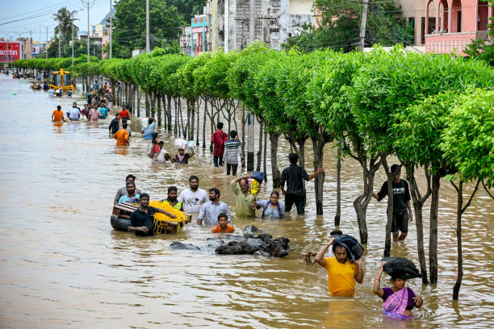
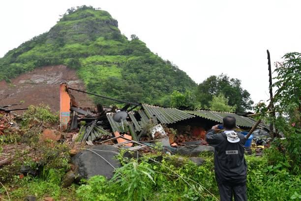
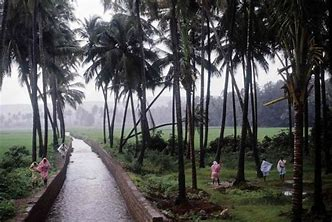

Negative Impacts of the Summer Monsoon in India



The summer monsoon can cause serious problems when it brings too much rain. Flooding is common in cities like Mumbai, damaging homes, roads, and transport systems. In rural areas, heavy rain can destroy crops and lead to soil erosion. Landslides also happen often in hilly areas, putting lives and property at risk.
When the monsoon brings too little rain, droughts can occur in places like Rajasthan. This causes water shortages and crop failure. Stagnant water during floods becomes a breeding ground for mosquitoes, spreading diseases like malaria and dengue. Dirty water can also lead to diseases such as cholera and typhoid. So while the monsoon is helpful, it also creates many challenges